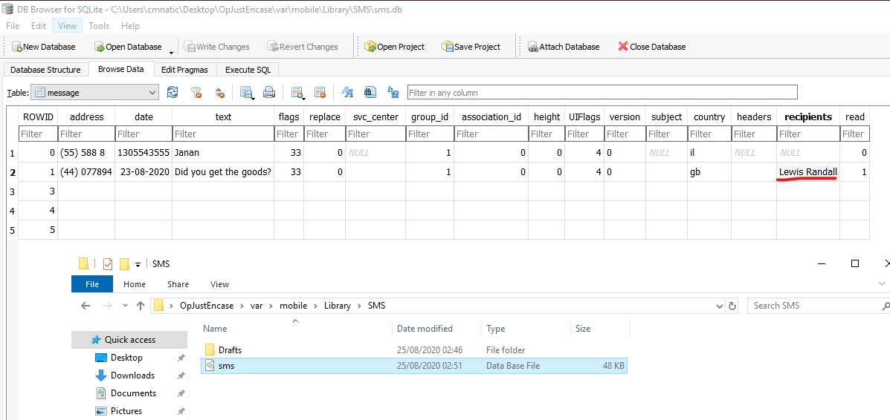
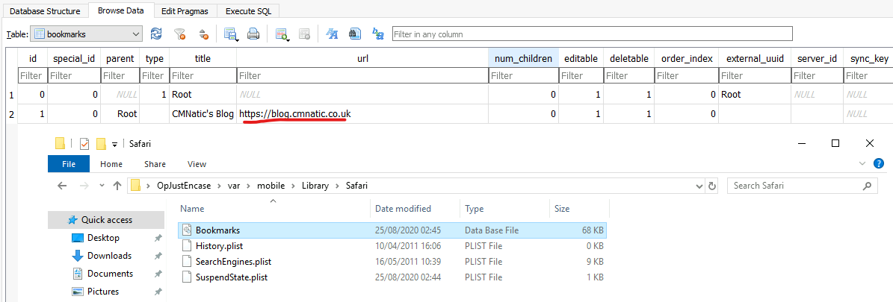
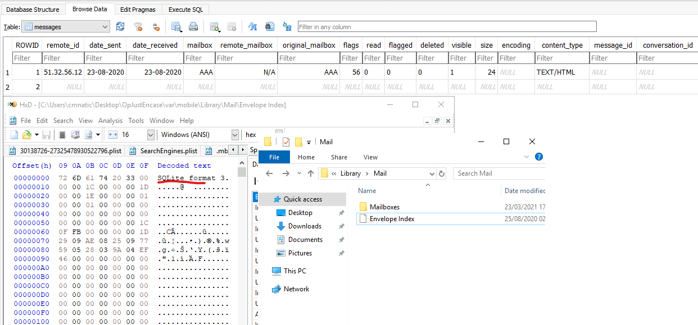
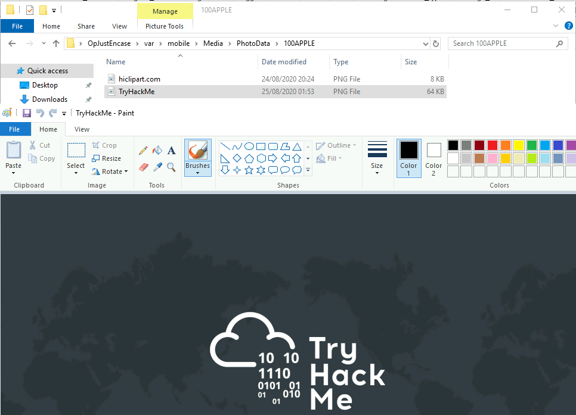
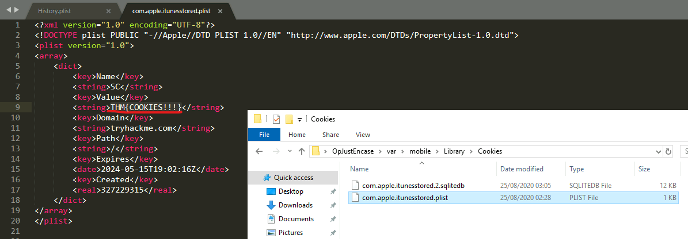

iOS Forensics
2024-05-09
Pokój ten w prosty i bardzo ciekawy sposób wprowadza do tematu przeglądania danych z telegonów z systemem IOS, poniżej zamieszczam samo rozwiązanie zadania które było podsumowaniem nauki.
Pierwszym zdanie było odnalezienie odbiorcy ostaniego adresata SMS oraz wiadomości. Dane te odczytałem za pomocą narzędzia DB Browser ponieważ dane były w formacie SQLite.
Następnym zadniem dość analogicznym było znalezienie pierwszego imiona występującego w ksiązce telefonicznej oraz nazwę organizacji z której pochodzi.

Następne zadanie polegało na zanlezieniu zapisanego adresu URL w histori przeglądarki Safari
W kolejnym zdaniu miałem znaleść remote_id ostaniego maila co napoczątku było zaskoczeniem bo plik nie wyglądał na format SQLite aczkolwiek po przyglądnięciu się mu w programie HxD okazało się że też jest prosty do otwarca w Browser DB.
Ostanie dwa proste zadania polegały na znalezieniu zdjęcia z nazwą pewnej firmy oraz znalezieniu porzuconego pliku cookie.
 
Źródło: https://tryhackme.com/r/room/iosforensics
Bardzo interesujący był ten pokój i mam nadzieję że był pewnym wstępem do bezpieczeństwa urządzeń moblinych które wpadło mi w oko ostatnim czasem.